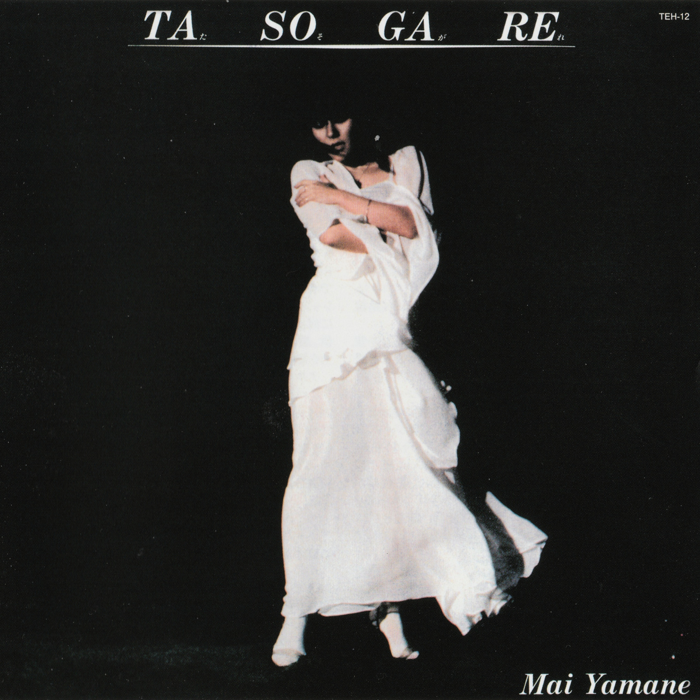

Day 57

山根麻衣 - たそがれ - たそがれ - 1980
油管上听见的，第一遍感觉声音不错独奏好听。然后发现山根麻衣？那不是唱 THE REAL FOLK BLUES 的吗？整张专辑都还不错，最好听的就是第一首。
这张专辑居然已经不卖了，找了半天在reddit上找到了分享的文件。
いつだって そばにいる
俺が 見えないのか
胸の中 ぬくもりを
のこしてを いた
わけもなく やさしくは
できない とびいた だろう
ことばなど なんとでも
いつく ようえる
なんとか うまく やれたよ
どうして 今待って
もういちど かけ tell me your hopes and…
本の少し だけ
俺を しんじて
いちどでも ふりかえる
そんなまで したくない
お前なら 笑って
みよくてくれ
今さら もどれないのさ
しらけて しまうよ
男はたびに 出ってゆく
つめたい 風に
心をさらし
なんとか うまく やれたよ
どうして 今待って
もういちど かけ tell me your hopes and…
本の少し だけ
俺を しんじて
source: https://lyricstranslate.com/en/mai-yamane-tasogare-lyrics.html